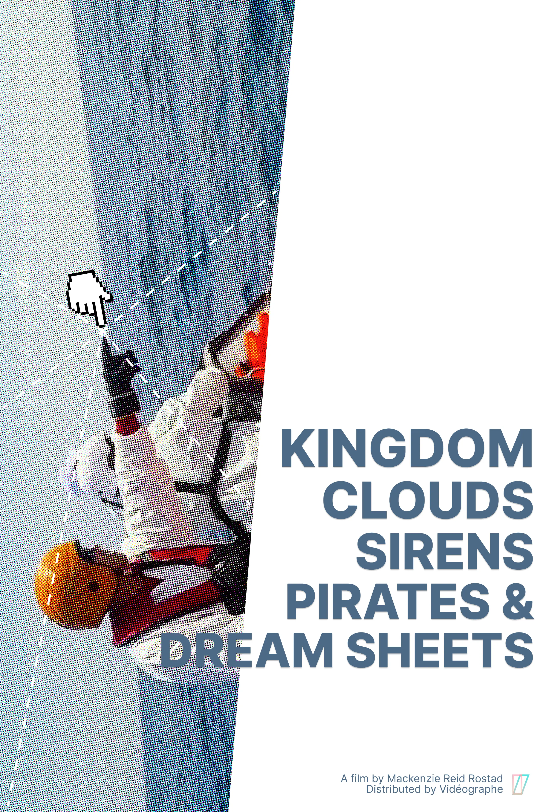

FILMS
Attività Economica (????)
Land of the Living Skies (????)
Kingdom, Clouds (2021)
Dear Kristina (2020 - 2021)
Goodnight Goodnight (2020)
This Place, Here (2017)
All That is Wild (2016)
Correspondences
OTHER
colourist
videos/visuals
CONTACT
65min., 2021, 2K/24p, Color, HD/Foundfootage, Germany (EN)
Distributed by Videographe
An extended correspondence film dedicated to the residents of Liebig 34, an anarcho-feminist housing co-operative and squat in Berlin that was evicted shortly after the filmmaker’s attempted move to the city. Comprising both found and filmed images, the film explores concepts of rent, refuge and resistance in Berlin and beyond.

FILMS
Attività Economica (????)
Land of the Living Skies (????)
Kingdom, Clouds (2021)
Dear Kristina (2020 - 2021)
Goodnight Goodnight (2020)
This Place, Here (2017)
All That is Wild (2016)
Correspondences
OTHER
colourist
videos/visuals
CONTACT